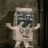

I'm just so damn upset that I haven't written so far this week (yah right). I've been real busy since Labor Day, and while I didn't labor to clue you in, I ask that you understand. I took the holiday off so I could make Marilia's mom some cookies. I hear she really liked them, I couldn't give them to her myself. I had alot of things to do Tuesday.
For one, I had to go to my website class. Learning about tables...how boring! Honestly, though, you might see more tables on my website. I didn't realize how much functionability they add to a page. This year is going to be known as the year of transformations of my Blog, at the very least. I'd like to at some point put the whole entries in these stylized tables and even change the background. It's just uncanny how much my Blog looks more and more like other journals every day.
ANYWAYS, the big deal about Tuesday was my consoltation to get my wisdom teeth out. Yup, and that's going down TOMORROW, so I'm going to be drugged up all weekend and I'm going to be in bed getting plenty of rest enduring plenty of pain, for sure. I got my Hydrocodine though, so I'm going to be sitting very pretty, thank goodness. I even got out of work for the weekend, no questions asked. I mean, I have to provide documentation, but what else is new?
On Wednesday, I talked to my friend Evita at work about alot of things, mostly about the election and gay stuff too. I picked her to come out to randomly, as I have always been very wary about coming out to people at work. It's just different there, and I figured it would make the work environment unnecessarily hostile. She was cool with it, and proceeded to ask me the usual array of stereotypical questions: "How do you know if someone's gay?!" I don't mind answering those, I just enjoy sharing stuff about my love life too. Girls talk about their boyfriends all the time, and I want to talk about mine! I have the best one, after all :-D
Today, I got my prescriptions and went to class. I've been writing a paper since then, and I think it's shaping up well. It should be in better shape by midnight when I have to stop eating and drinking. I made chicken tonight, though. I will probably be away from solid foods for a while. I'm hoping icecream doesn't hurt. I'm making Matt take care of me tomorrow, but no one is going to be around much this weekend, so that's going to be kind of lonely. It's Gen's birthday, and I'm excited for her, but she's going to see her mom, so no party this year. Bummer, huh? That keg was too heavy to push around anyways, and I suppose another visit from the Po-Po would not be welcomed.
My sister is coming tonight, so she'll get to take the tempting fudge away from me. I let Gen have some of it a few weeks ago, and then I took a bite, and it was just amazing! It makes me want to drive to Helen this instance to get some more. I think peanut butter and cocoa are dreamy O;-)
So, I'll stop ranting. I just wanted to put something here so people will stop checking and thinking I'm a deadbeat. Adios folks.
| Current Music | Ozzy Osbourne - No More Tears | ||
| Current Mood | Paper-related woe |